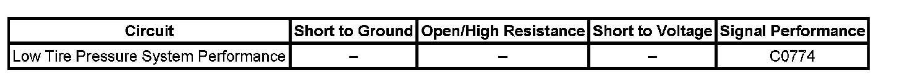

C0774
DTC C0774
DTC Descriptor
DTC C0774
Low Tire Pressure System Performance
Diagnostic Fault Information
Perform the Diagnostic System Check - Vehicle prior to using this diagnostic procedure. Initial Inspection and Diagnostic Overview

Circuit Description
The tire pressure monitor (TPM) system has 4 radio frequency (RF) transmitting pressure sensors inside each wheel/tire assembly. If a sensor detects a low tire pressure, the DIC will display the CHECK TIRE PRESSURE, and the Electronic Brake Control Module (EBCM) will receive a serial data message that a DTC C0774 has set. The Vehicle Stability Enhancement System (VSES) will compensate for the low tire pressure with a calibration change to low tire present. Review the TPM for diagnostics for C0774.
Conditions for Running the DTC
Vehicle speed is 32 km/h (20 mph), or greater for 1 minutes.
Conditions for Setting the DTC
^ The TPM detects a tire pressure difference in 1 tire of 8.2 kPa (1.2 psi) higher or lower than the other 3.
^ The EBCM will receive a serial data message that a DTC C0774 has set.
Actions Taken When the DTC Sets
^ A DTC C0774 is stored in memory.
^ The VSES system compensates for low tire pressure.
Conditions for Clearing the DTC
^ A current DTC will clear when the TPM system is reset.
^ A history DTC will clear after 100 consecutive malfunction free ignition cycles from when the TPM system has been reset.
Diagnostic Aids
^ A possible cause of this DTC could be a low tire pressure in one of the four tires.
^ Review the tire pressure monitoring (TPM) system check for more information. Refer to Diagnostic System Check - Tire Pressure Monitoring Diagnostic System Check - Tire Pressure Monitoring
Repair Instructions
Perform the Diagnostic Repair Verification after completing the diagnostic procedure. Verification Tests